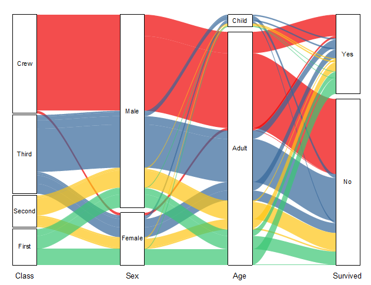

Alluvialdiagramme
Alluvial-Diagram
- 
Datenanforderungen
Wählen Sie mindestens zwei Y-Spalten oder einen Wertebereich aus mindestens zwei Spalten aus. Die Diagrammzuweisung macht keinen Unterschied; ausgewählte Spalten werden wie Y-Spalten behandelt.
Diagramm erstellen
- Wählen Sie die gewünschten Daten aus.
- Wählen Sie Zeichnen > Kategorial: Alluvial.
Informationen zum benutzerdefinierten Anpassen von Alluvialdiagrammen finden Sie unter folgenden Themen:
Vorlage
Alluvial.otpu (installiert im EXE-Ordner von Origin)
Hinweise
Um die Einzelheiten über diesen Diagrammtyp gut zu beschreiben, möchten wir die kleinen schwarzen Rechtecke als "Knoten", die farbigen Bereiche (verbinden die Knoten) als "Verbindungen" und die vertikalen Gruppen der Knoten als "Stufen" bezeichnen.
Alluvialdiagramme stellen gewichtete Flüsse unter Knoten dar. Alluvialdiagramme unterstützen zwei Anordnungstypen:
- Rohdaten in Arbeitsblatt: Einzelne Beobachtungen werden als Zeilen gespeichert, während die Variablen oder Eigenschaften als Spalte gespeichert werden. Jede Zeile des Datensatzes wird zu einer Reihe von verbindenden Flüssen, jede Spalte definiert eine Stufe, die Zellen mit dem gleichen Wert definieren einen Knoten.
- Zusammengefasste Daten: Arbeitsblatt mit mehreren Beschriftungsspalten und einer Wertespalte - jede Beschriftungsspalte wird als einzelne Knotenspalte im Diagramm gezeigt, und die letzte Spalte sollte die Spalte mit den Verbindungswerten sein.
In einem von Origin erstellten Alluvialdiagramm müssen Sie die Höhe der Knoten nicht direkt definieren: (1) Im Fall der Rohdateneingabe sind die Knotenhöhe und die Flussbreite mit der Anzahl der Zeilen im Datensatz verbunden, der die gleiche Menge von Knoten enthält. Die Flüsse, die von der gleichen Menge von Knoten kommen bzw. zu ihnen führen, werden gruppiert. (2) Im Fall der Eingabe der zusammengefassten Daten gewichten die Werte in der letzten Spalte die Verbindungsbreite und die Knotenhöhe innerhalb eines gesamten Flusses. Die Flüsse, die von der gleichen Menge von Knoten kommen bzw. zu ihnen führen, werden gruppiert.
Weitere benutzerdefinierte Anpassung:
- Sie können den Abstand zwischen den Knoten und den Abstand zwischen dem Knoten und der Flussverbindung für alle Zeichnungen zusammen anpassen.
- Wenn Sie auf einen Knoten klicken, wird die Eingabe bzw. Ausgabe des gesamten Flusses markiert, einschließlich der Verbindungen und der zugehörigen Knoten.
- Wenn Sie auf eine festgelegte Verbindung klicken, wird die Eingabe bzw. Ausgabe des gesamten Flusses markiert, einschließlich der Verbindungen und der zugehörigen Knoten.
- Sie können die Verbindungsfarbe festlegen, den Knoten folgen oder die Farbauswahl verwenden.
- Die Verbindungslinien können durch vier Methoden klassifiziert und kombiniert werden.
- Sie können entscheiden, ob und wie Beschriftungen für Knoten und/oder Verbindungen gezeigt werden.